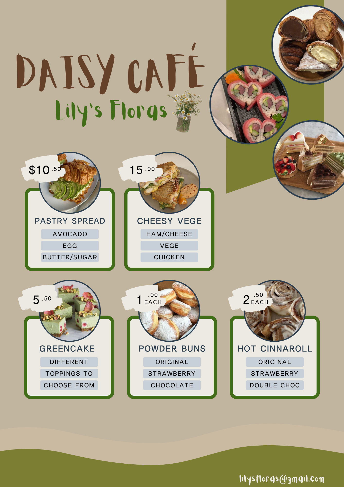
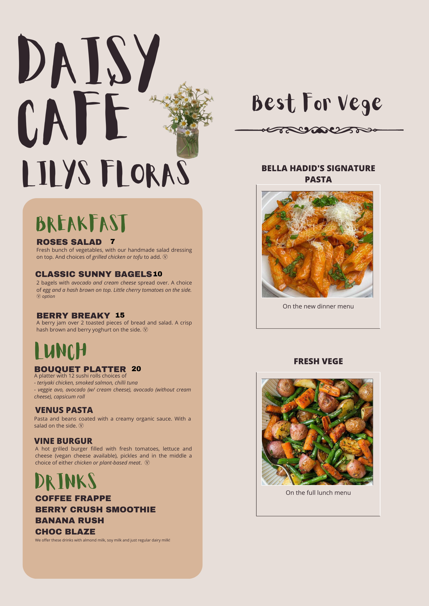
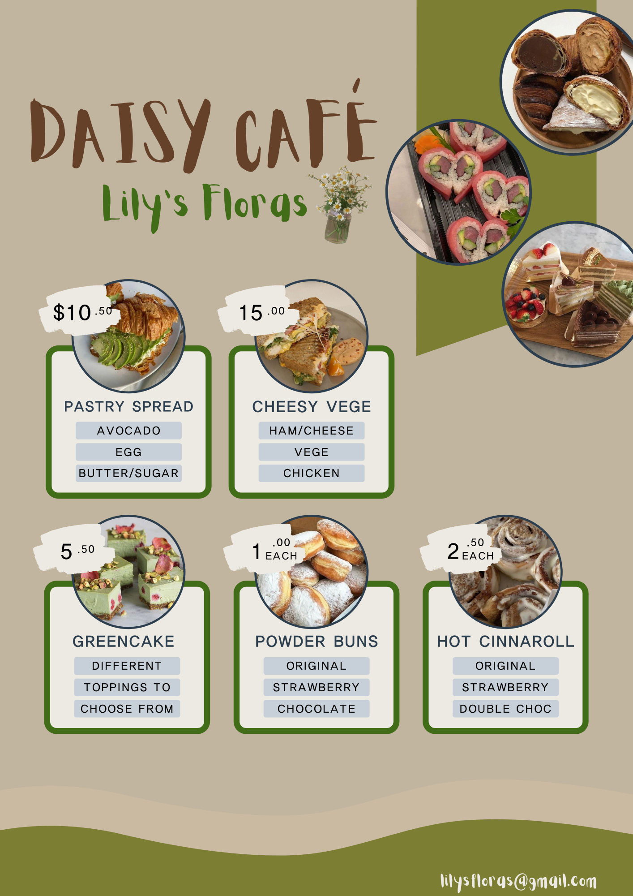
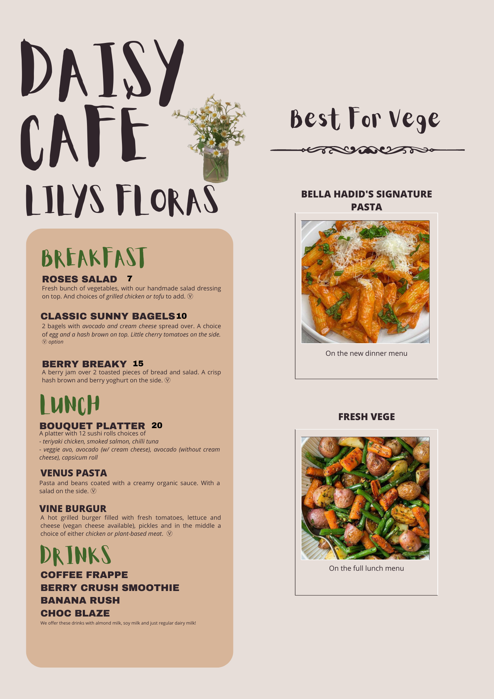

Daisy Café
ﾟ｡ABOUT DAISY CAFÉ｡ﾟ
We added the Daisy Café to Lily's Floras just
recently.
If you need a break from shopping at
our
fresh flowers, the café is a great
place
to relax and even have some lunch 🍓
We serve dinner on Fridays now
 


